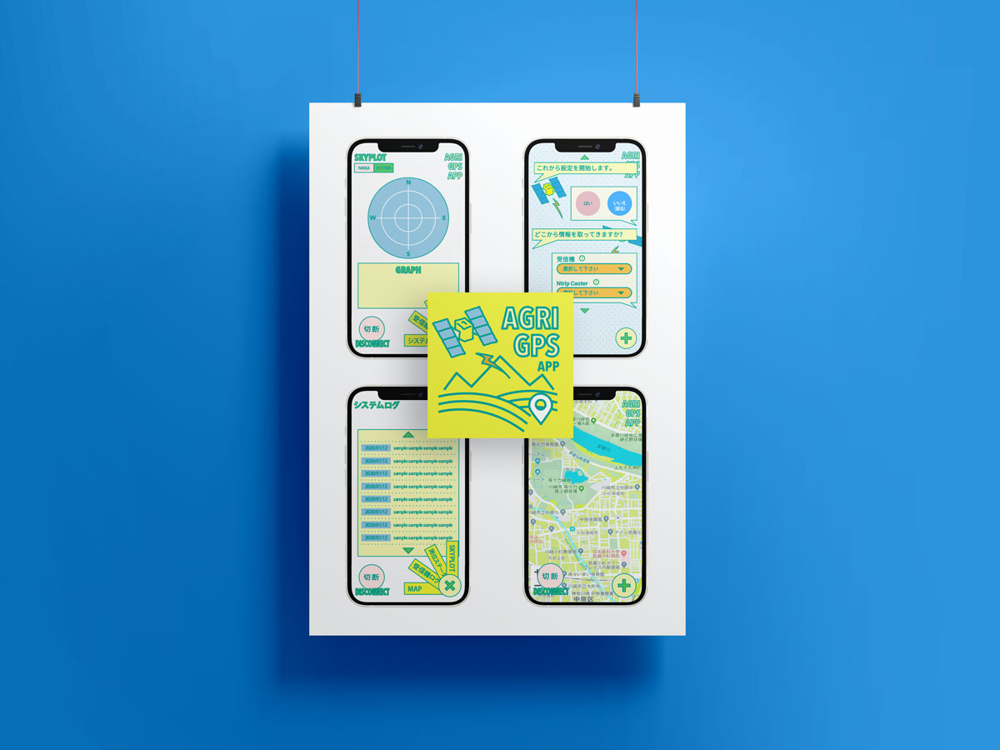
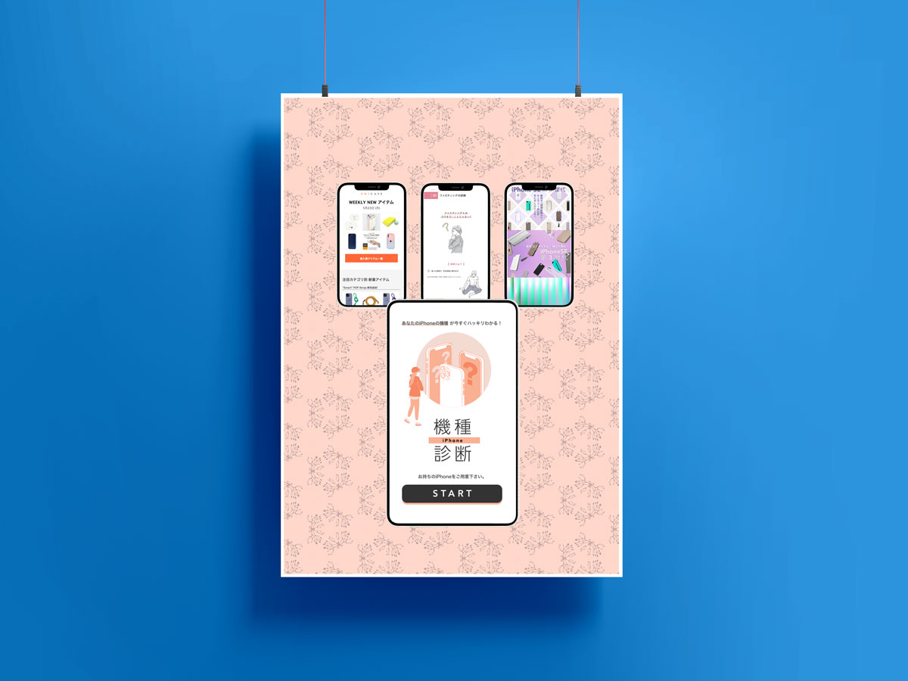

ABOUT ME

渡邊智香子
自己紹介：一目で惹かれるデザインをモットーに、日々センスを磨いている。
島根県 出雲市の、浜山という山や、稲佐の浜（※神代から続く、八百万の神を迎える儀式の場所としてちょっと有名）という海の近くで生まれ、都会と繋がる文明機器・・・TVを見て育ったため、出雲弁という強烈な方言がろくに聞き取れないまま大人になった。
2003 武蔵野美術大学 造形学部 デザイン情報学部卒
デザイン情報学科では、 CM映像、編集、UIデザイン、プログラム、ユーザー分析、KJ法などのブレインストーミング、商品アイデアとモックアップ、プレゼンテーション、DTP、インスタレーションアートなど。
白物家電二社、東芝・シャープのデザイン部長のプロダクトゼミでは、デザイン思考ユーザー分析ワークショップ、カスタマージャーニー（ユーザー動線シナリオ）、
モックアップ制作など学んだ。
また、DTPゼミにも在籍し、日経デザイン元編集長の森山教授にDTP技術と実際にインタビューをし書籍にするなど編集技術を学ぶ。
私は電子音楽が好きなので野田努氏にインタビューをした。
2003 ドイツ ハンブルク ハインターコンチギャラリーにて個展
2003 株式会社セガに入社
mayaでのゲームムービー制作とスクリプトから始まり、UIデザイン、キャラクターデザイン、グッズデザイン、ローカライズ、２Dアウトプットツールの共同開発、デザインシステムなど２dグラフィックを印刷含め全般担当。
世界のクラシックボードゲームで2dグラフィックデザイナー、WCCFにて2dグラフィックチーフを2期担当し、独立。
2008-アプリケーションやWEB、印刷物など、様々な制作をする。主なクライアントはバンダイナムコ、セガ、ドワンゴ、Gクレスト、ライトハウス&テクノロジーなど。
出産と育児のため休業後、キッズカフェを開店。トトスェンススという名前。様々なワークショップを開いた。2
2021-2022 蔦屋書店代官山のアートヴィレッジにあるCCC（カルチャーコンビニエンスクラブ）フロンティアデザインに勤務。
ecサイト・オウンドメディア・UI/UX制作・改修・イラスト制作・データヴィジュアライゼーション・sassによるサイト構築・改修・データドリブンなど。
GA4、クラリティをGTM、グローバルtagの両方から接続し、Eコマース含めデータ取得出来ている。
UI/UX改善やABテストに必要なデータドリブンの一貫として、アナリティクスのデータをデータポータルに繋げたデータビジュアライゼーションにハマっている。サイトの流入経路のシーケンスのセグメントをアナリティクス側で切って、 データポータルでデータを繋いでビジュアル化。いつでも開くと最新のユーザーの流れが見えるデータビジュアライゼーションが自信作。
複雑な階層でもユーザーの動きがリアルに分かるので動きに沿った施策が取れる。
リピーター・インタレスト・ヒューリスティック・ボトルネック分析も全てデータをビジュアル化しており、開くだけで最新情報がわかり、PDCAサイクルに便利。
2022 医療テック系スタートアップにマネージャー候補で参加。グラフィックデザイン、WEBデザイン、データ分析など。現在に至る。 踊れる音楽、フードコーディネイト、旅、お茶、もちろん新技術が好きです。
どうぞよろしくお願いいたします。
自己紹介：一目で惹かれるデザインをモットーに、日々センスを磨いている。
島根県 出雲市の、浜山という山や、稲佐の浜（※神代から続く、八百万の神を迎える儀式の場所としてちょっと有名）という海の近くで生まれ、都会と繋がる文明機器・・・TVを見て育ったため、出雲弁という強烈な方言がろくに聞き取れないまま大人になった。
2003 武蔵野美術大学 造形学部 デザイン情報学部卒
デザイン情報学科では、 CM映像、編集、UIデザイン、プログラム、ユーザー分析、KJ法などのブレインストーミング、商品アイデアとモックアップ、プレゼンテーション、DTP、インスタレーションアートなど。
白物家電二社、東芝・シャープのデザイン部長のプロダクトゼミでは、デザイン思考ユーザー分析ワークショップ、カスタマージャーニー（ユーザー動線シナリオ）、
モックアップ制作など学んだ。
また、DTPゼミにも在籍し、日経デザイン元編集長の森山教授にDTP技術と実際にインタビューをし書籍にするなど編集技術を学ぶ。
私は電子音楽が好きなので野田努氏にインタビューをした。
2003 ドイツ ハンブルク ハインターコンチギャラリーにて個展
2003 株式会社セガに入社
mayaでのゲームムービー制作とスクリプトから始まり、UIデザイン、キャラクターデザイン、グッズデザイン、ローカライズ、２Dアウトプットツールの共同開発、デザインシステムなど２dグラフィックを印刷含め全般担当。
世界のクラシックボードゲームで2dグラフィックデザイナー、WCCFにて2dグラフィックチーフを2期担当し、独立。
2008-アプリケーションやWEB、印刷物など、様々な制作をする。主なクライアントはバンダイナムコ、セガ、ドワンゴ、Gクレスト、ライトハウス&テクノロジーなど。
出産と育児のため休業後、キッズカフェを開店。トトスェンススという名前。様々なワークショップを開いた。2
2021-2022 蔦屋書店代官山のアートヴィレッジにあるCCC（カルチャーコンビニエンスクラブ）フロンティアデザインに勤務。
ecサイト・オウンドメディア・UI/UX制作・改修・イラスト制作・データヴィジュアライゼーション・sassによるサイト構築・改修・データドリブンなど。
GA4、クラリティをGTM、グローバルtagの両方から接続し、Eコマース含めデータ取得出来ている。
UI/UX改善やABテストに必要なデータドリブンの一貫として、アナリティクスのデータをデータポータルに繋げたデータビジュアライゼーションにハマっている。サイトの流入経路のシーケンスのセグメントをアナリティクス側で切って、 データポータルでデータを繋いでビジュアル化。いつでも開くと最新のユーザーの流れが見えるデータビジュアライゼーションが自信作。
複雑な階層でもユーザーの動きがリアルに分かるので動きに沿った施策が取れる。
リピーター・インタレスト・ヒューリスティック・ボトルネック分析も全てデータをビジュアル化しており、開くだけで最新情報がわかり、PDCAサイクルに便利。
2022 医療テック系スタートアップにマネージャー候補で参加。グラフィックデザイン、WEBデザイン、データ分析など。現在に至る。 踊れる音楽、フードコーディネイト、旅、お茶、もちろん新技術が好きです。
どうぞよろしくお願いいたします。
WORKS

nyu-nyu Co.Ltd.C.I Web
design/cording



lighthouse.incDemo
UI design

UNiCASEEC Site
design/Illustration

WTBusiness card
design

Womobox
design
WEB & UI DESIGNS
-
gyu-nyu co.ltd
-
-継- tsugu
World Club Champions Football

SEGA（hitmaker/AM3）
World Club Champions Football 通称WCCF。カードではなく札束を刷っていると揶揄されるぐらい、レアカードにプレミアがついていた。
（最高一枚20万円などだったので20万円札？）
このプロジェクトでは、独立するA氏の後を継いでチーフになり
左のようにロゴ、UI、グッズの全てのメインとなるデザインをはじめとし、デザインシステム構築、２Dアウトプットツールの共同開発&実験（ハード研＆ライブラリチームと ）、ローカライズ対応、と何でも屋であった。2dグラフィックチームのチーフ担当時製作したグッズは２期共に予約当日完売、カードは累計5億枚のカード発行枚数で、ギネスに登録された。
カード製作がとても効率的にできるようになり、500枚余りのカードデザインを作る際に、レアカードは事前に自動切り抜き処理後の調整を2名にしてもらい、あとは8台のmacをイントラネットで繋ぎ、自動処理を一生懸命に製作、帰宅前に実行しmacからmacへ、次から次へと処理が終わったフォルダに処理をバトンして、 翌日、出社時に500枚のカードのデザインがプリントアウトされている仕組み。
目で見て微調整、確認し、一週間で500枚余りの凸版印刷さんに渡す印刷データが完成した。（※選手データは企画でゲーム用のものをCSV制作、選手データをAIのデザインデータに流し込むのはプログラマーと連携。やはりここも全自動。）便利なものを色々と後に引き継げたと思う。
考えるところはよく考え、自動で良いところは全自動。
クオリティも担保でき、ミス発生も最小限になりスムーズである。
World Club Champions Football 通称WCCF。カードではなく札束を刷っていると揶揄されるぐらい、レアカードにプレミアがついていた。
（最高一枚20万円などだったので20万円札？）
このプロジェクトでは、独立するA氏の後を継いでチーフになり
左のようにロゴ、UI、グッズの全てのメインとなるデザインをはじめとし、デザインシステム構築、２Dアウトプットツールの共同開発&実験（ハード研＆ライブラリチームと ）、ローカライズ対応、と何でも屋であった。2dグラフィックチームのチーフ担当時製作したグッズは２期共に予約当日完売、カードは累計5億枚のカード発行枚数で、ギネスに登録された。
カード製作がとても効率的にできるようになり、500枚余りのカードデザインを作る際に、レアカードは事前に自動切り抜き処理後の調整を2名にしてもらい、あとは8台のmacをイントラネットで繋ぎ、自動処理を一生懸命に製作、帰宅前に実行しmacからmacへ、次から次へと処理が終わったフォルダに処理をバトンして、 翌日、出社時に500枚のカードのデザインがプリントアウトされている仕組み。
目で見て微調整、確認し、一週間で500枚余りの凸版印刷さんに渡す印刷データが完成した。（※選手データは企画でゲーム用のものをCSV制作、選手データをAIのデザインデータに流し込むのはプログラマーと連携。やはりここも全自動。）便利なものを色々と後に引き継げたと思う。
考えるところはよく考え、自動で良いところは全自動。
クオリティも担保でき、ミス発生も最小限になりスムーズである。
DESIGNS

totosuenssETHICAL PROJECT
企画・運営・制作
実験/エシカルプロジェクト
多摩川流域の民族として自分が運営するカフェにてワークショップを開催。
古き良き民族として母親が集まってのんびり縫い物や織物編み物をしながら育児するのを再現した実験。
一番最初はTシャツをカットして紐にし、三つ編みにして縫い付けたり自作の織り機でフィンランドのトラースマッタを制作。
しかし時間が非常にかかるので、 効率重視である時短ライフハック母親ジェネレーションの我々には本当にまどろっこしい。と言うわけで、のんびりしつつも、どんどん効率化し、そのうちアームニッティングに変化。太さ直径10センチくらいの渦巻き状の束にして、腕で編むことに。2〜3時間で一枚のマットが完成した（写真左上のもの）。クラフトワークを子連れでお茶をしながら行う、ゆったりしつつも本気になると即座に作り終えられるワークショップ。
このマットの利点としては、円の外周がどんどん追加できる。
古着を溜めて、捌いて、直径10mくらいの円形にしたらさぞや見ものだろう。沢山の親子に参加してもらった。
多摩川流域の民族として自分が運営するカフェにてワークショップを開催。
古き良き民族として母親が集まってのんびり縫い物や織物編み物をしながら育児するのを再現した実験。
一番最初はTシャツをカットして紐にし、三つ編みにして縫い付けたり自作の織り機でフィンランドのトラースマッタを制作。
しかし時間が非常にかかるので、 効率重視である時短ライフハック母親ジェネレーションの我々には本当にまどろっこしい。と言うわけで、のんびりしつつも、どんどん効率化し、そのうちアームニッティングに変化。太さ直径10センチくらいの渦巻き状の束にして、腕で編むことに。2〜3時間で一枚のマットが完成した（写真左上のもの）。クラフトワークを子連れでお茶をしながら行う、ゆったりしつつも本気になると即座に作り終えられるワークショップ。
このマットの利点としては、円の外周がどんどん追加できる。
古着を溜めて、捌いて、直径10mくらいの円形にしたらさぞや見ものだろう。沢山の親子に参加してもらった。